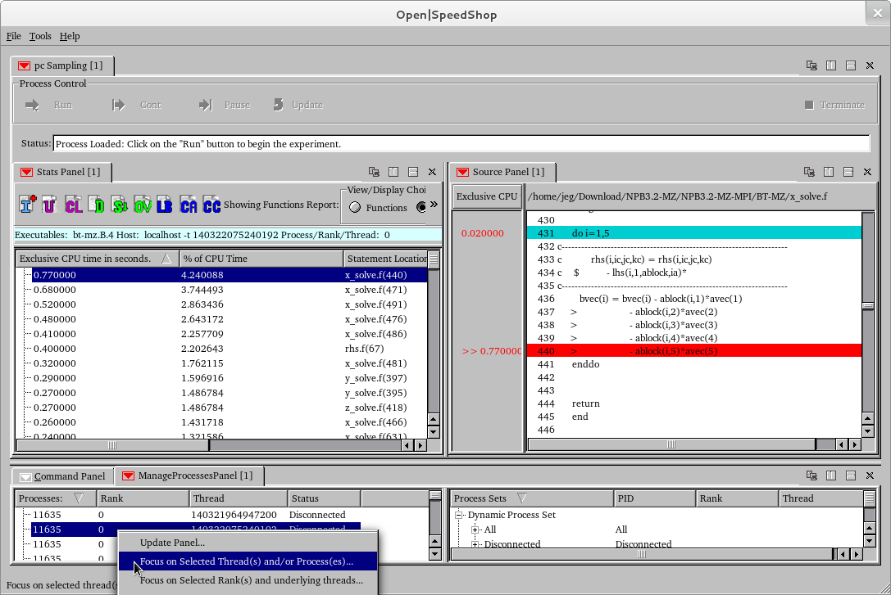
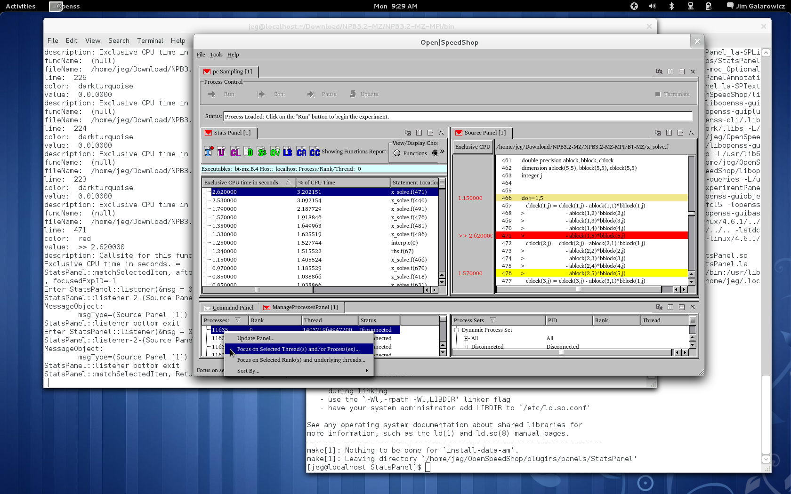
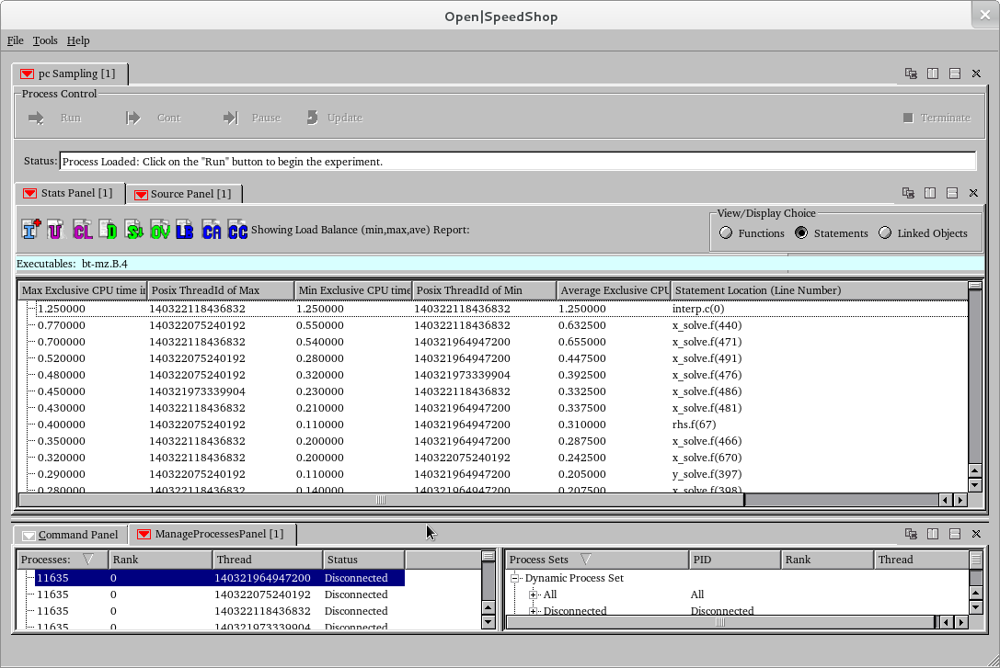

Using Open|SpeedShop™
Examples using Open|SpeedShop for Performance
Analysis of Hybrid (MPI and openMP) applications
We
have run Open|SpeedShop convenience script on the NPB-MZ BT
program and created a database file that has 4 ranks each of
which has 4 underlying openMP threads.
Within
a terminal window, enter:
openss -f bt-mz.B.4-pcsamp-1.openss
Changes have been added to Open|SpeedShop 2.0.1 to better support
the analysis of hybrid applications which will be outlined below.
Here we show the aggregated results relative to statements in the
application. So, we are showing the statements that took the
most time in the job. For this execution of BT, statement 440
took the most time. By double clicking on the statement
Open|SpeedShop focuses on the source for that line of the
application source and highlights that line. Note, in
this view we moved the ManageProcess tab to the lower panel and
split the upper panel using the vertical splitter icon on the far
right side of the original upper panel.

Here we used the ManageProcess panel to highlight one rank
and an individual thread within the rank to show only that threads
performance data in the Stats Panel view.
Note: Use the focus on threads and processes Manage Process panel
option to
focus on individual threads within a rank.
Right mouse button down on the Manage Process panel tab to see the
options.

Here we used the ManageProcess panel to highlight one rank to
show the data from all the threads that are executed under
that particular rank in order to see the performance data in
the Stats Panel view. Note: Use the "focus on
selected rank and underlying
threads" Manage Process panel option to focus on all the
threads within a rank. Right mouse button down on
the Manage Process
panel tab to see the options.

Note: Once you focus on individual or groups of ranks, e.g.
venturing away from the default aggregated views, then you need to
use
the "CL" clear auxillary setting icon to clear away all the optional
selections and get back to looking at the aggregated results again.

After clearing the specific rank and/or thread selections, we can
click the "LB" load balance icon and Open|SpeedShop will display
the min, max, average values across all the ranks in the hybrid
code. This helps decide if there is imbalance across the ranks
of
the hybrid application. We can focus on individual ranks
to see the balance across the openMP threads that are in an
individual
rank (next example image).

Here we used the Manage Process panel "Focus on selected rank and
underlying threads" menu options to view the load balance
across the 4 openMP threads for the rank 0 process.

Please also explore the various options offered via a panel's pull
down menu. Further options can be accessed by clicking on a colored
downward-facing arrow or using the StatsPanel icons. Red icons
represent view options, such as updating the data or clearing the
view options. The "green" icons correspond to different possible
views of the performance data. The "dark blue" icons
correspond
to analysis options while the "light blue" icon corresponds to
information about the experiment. There is context sensitive
text that
is shown when you hover over the icons.
Thanks!
Please visit the Open|SpeedShop forum if you have questions: Open|SpeedShop
Forum.
Back To Getting Started With Open|SpeedShop